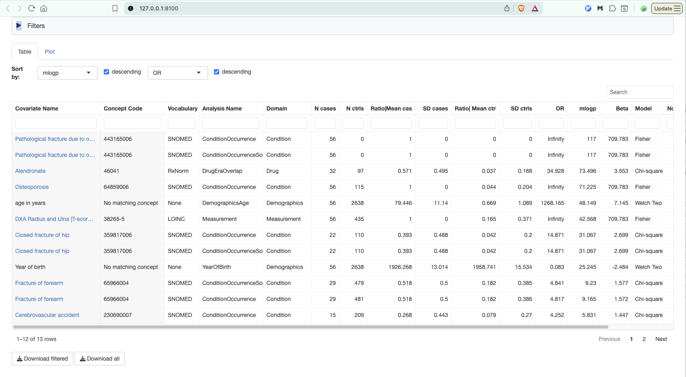

vignettes/run_stanndalone_codewas.Rmd
run_stanndalone_codewas.RmdThis tutorial shows how to run the CodeWAS analysis
of CO2AnalysisModules directly from R, without launching
the full Cohort Operations application.
CodeWAS (a PheWAS-style tool) compares the enrichment of medical codes and measurement values between a cases cohort and a controls cohort, returning odds ratios and p-values for each covariate.
The starting point is assumed to be:
We use the Eunomia
GiBleed sample database as a self-contained example, but
the same steps apply to any OMOP CDM (SQLite, PostgreSQL, BigQuery, …)
by changing only the connection settings.
For a detailed walkthrough of how to build and populate a cohort table, see the HadesExtras article Using CohortTableHandler.
Load the packages that expose the objects we call by name. Every
other function is referenced with the strict
package::function() notation so it is always clear which
package a function comes from.
library(CO2AnalysisModules)
library(HadesExtras)
# The remaining packages are used through `package::function()`:
# Eunomia - provides the example OMOP CDM
# CohortGenerator - reads and generates cohort definitions
# duckdb / DBI - read the results database
# shiny / ggiraph - visualise the resultsThe connection to the database and the location of the cohort table are described in a YAML configuration. This keeps the credentials and schema names out of the analysis code and lets you point the same script at a different database by editing only the configuration.
The connection$connectionDetailsSettings block is passed
as-is to DatabaseConnector::createConnectionDetails(), so
it accepts any DBMS that DatabaseConnector supports. Its keys must
therefore be exactly the arguments of that function (dbms,
server, user, password,
port, …); see the createConnectionDetails()
reference for the full list. The cdm block tells the
analysis where the OMOP CDM and vocabulary live, and the
cohortTable block where the cohort table is (or will be)
stored.
For this example we first download the Eunomia GiBleed
SQLite file, then build a configuration that points to it.
# Eunomia needs a folder to cache the sample database
Sys.setenv(EUNOMIA_DATA_FOLDER = tempdir())
pathToGiBleedEunomiaSqlite <- Eunomia::getDatabaseFile("GiBleed", overwrite = FALSE)
#> attempting to download GiBleed
#> attempting to extract and load: /tmp/RtmpLhB5V0/GiBleed_5.3.zip to: /tmp/RtmpLhB5V0/GiBleed_5.3.sqlite
# `<pathToGiBleedEunomiaSqlite>` is a placeholder that `readAndParseYaml()`
# substitutes with the value passed as an argument. For a real database you
# would instead hard-code the server, and add `user`, `password`, `port`, etc.
configYaml <- "
database:
databaseId: E1
databaseName: GiBleed
databaseDescription: Eunomia database GiBleed
connection:
connectionDetailsSettings:
dbms: sqlite
server: <pathToGiBleedEunomiaSqlite>
cdm:
cdmDatabaseSchema: main
vocabularyDatabaseSchema: main
cohortTable:
cohortDatabaseSchema: main
cohortTableName: example_cohort_table
"
pathToConfigYaml <- file.path(tempdir(), "cohortTableHandlerConfig.yml")
writeLines(configYaml, pathToConfigYaml)
# Parse the YAML, resolving the `<pathToGiBleedEunomiaSqlite>` placeholder
cohortTableHandlerConfig <- HadesExtras::readAndParseYaml(
pathToYalmFile = pathToConfigYaml,
pathToGiBleedEunomiaSqlite = pathToGiBleedEunomiaSqlite
)For a BigQuery or PostgreSQL CDM, replace the
connectionandcdmblocks with the appropriatedbms,server/project, schemas and credentials. The rest of this tutorial stays identical.Eunomia is a special case because its SQLite driver ships with DatabaseConnector. Most other databases (PostgreSQL, SQL Server, BigQuery, …) additionally need a JDBC driver, supplied through the
pathToDriverkey ofconnectionDetailsSettings. See Obtaining drivers for how to download them and setpathToDriver.
createCohortTableHandlerFromList() opens the connection
and returns a CohortTableHandler R6 object. This object is
the single handle that execute_CodeWAS() needs: it knows
the connection, the CDM schemas, the cohort table.
cohortTableHandler <- HadesExtras::createCohortTableHandlerFromList(
cohortTableHandlerConfig = cohortTableHandlerConfig,
loadConnectionChecksLevel = "basicChecks"
)
#> Connecting using SQLite driver
#> Creating cohort tables
#> - Created table main.example_cohort_table
#> - Created table main.example_cohort_table
#> - Created table main.example_cohort_table_inclusion
#> - Created table main.example_cohort_table_inclusion_result
#> - Created table main.example_cohort_table_inclusion_stats
#> - Created table main.example_cohort_table_summary_stats
#> - Created table main.example_cohort_table_censor_stats
#> - Created table main.example_cohort_table_subset_attrition
#> - Created table main.example_cohort_table_checksum
#> Creating cohort tables took 0.04secsCodeWAS needs a cases cohort and a controls cohort in the cohort table.
There are two common ways to get cohorts into the table:
cohort_definition_ids as
cohortIdCases / cohortIdControls.For the example we reuse the fracture cohort definitions
shipped with HadesExtras. Cohort 1 is the cases cohort
(patients with a fracture). We then add a matched
controls cohort as cohort 2: for each case we
sample up to 10 subjects matched on sex and birth year, using
HadesExtras::createMatchingSubset().
# 1. Read the fracture cohort definition set from the HadesExtras package
cohortDefinitionSet <- CohortGenerator::getCohortDefinitionSet(
settingsFileName = "testdata/fracture/Cohorts.csv",
jsonFolder = "testdata/fracture/cohorts",
sqlFolder = "testdata/fracture/sql/sql_server",
cohortFileNameFormat = "%s",
cohortFileNameValue = c("cohortId"),
subsetJsonFolder = "testdata/fracture/cohort_subset_definitions/",
packageName = "HadesExtras",
verbose = FALSE
)
#> Loading cohortDefinitionSet
# 2. Define a matched-controls cohort derived from the cases cohort (id 1)
matchedControlsSubset <- CohortGenerator::createCohortSubsetDefinition(
name = "match",
definitionId = 1,
subsetOperators = list(
HadesExtras::createMatchingSubset(
matchToCohortId = 1,
matchRatio = 10,
matchSex = TRUE,
matchBirthYear = TRUE,
matchCohortStartDateWithInDuration = FALSE,
newCohortStartDate = "asMatch",
newCohortEndDate = "keep"
)
)
)
# The matched cohort becomes cohort id 2 (applied to target cohort id 1)
cohortDefinitionSet <- cohortDefinitionSet |>
CohortGenerator::addCohortSubsetDefinition(matchedControlsSubset, targetCohortIds = 2)
# 3. Generate the cohorts and write them to the cohort table
cohortTableHandler$insertOrUpdateCohorts(cohortDefinitionSet)
#> Skipping cohorts already generated:
#> Initiating cluster consisting only of main thread
#> 1/3- Generating cohort: fracture [HadesExtras] (id = 1)
#> | | | 0% | |=== | 4% | |===== | 8% | |======== | 12% | |=========== | 15% | |============= | 19% | |================ | 23% | |=================== | 27% | |====================== | 31% | |======================== | 35% | |=========================== | 38% | |============================== | 42% | |================================ | 46% | |=================================== | 50% | |====================================== | 54% | |======================================== | 58% | |=========================================== | 62% | |============================================== | 65% | |================================================ | 69% | |=================================================== | 73% | |====================================================== | 77% | |========================================================= | 81% | |=========================================================== | 85% | |============================================================== | 88% | |================================================================= | 92% | |=================================================================== | 96% | |======================================================================| 100%
#> Executing SQL took 0.0223 secs
#> 2/3- Generating cohort: fracture-controls [HadesExtras] (id = 2)
#> | | | 0% | |== | 3% | |===== | 6% | |======= | 10% | |========= | 13% | |=========== | 16% | |============== | 19% | |================ | 23% | |================== | 26% | |==================== | 29% | |======================= | 32% | |========================= | 35% | |=========================== | 39% | |============================= | 42% | |================================ | 45% | |================================== | 48% | |==================================== | 52% | |====================================== | 55% | |========================================= | 58% | |=========================================== | 61% | |============================================= | 65% | |=============================================== | 68% | |================================================== | 71% | |==================================================== | 74% | |====================================================== | 77% | |======================================================== | 81% | |=========================================================== | 84% | |============================================================= | 87% | |=============================================================== | 90% | |================================================================= | 94% | |==================================================================== | 97% | |======================================================================| 100%
#> Executing SQL took 0.262 secs
#> 3/3- Generating cohort: fracture-controls [HadesExtras] - match (id = 2001)
#> | | | 0% | |===== | 7% | |========= | 13% | |============== | 20% | |=================== | 27% | |======================= | 33% | |============================ | 40% | |================================= | 47% | |===================================== | 53% | |========================================== | 60% | |=============================================== | 67% | |=================================================== | 73% | |======================================================== | 80% | |============================================================= | 87% | |================================================================= | 93% | |======================================================================| 100%
#> Executing SQL took 0.0587 secs
#> Generating cohort set took 0.58 secs
#> getCohortDemograpics took 0.0954 secsYou can confirm the cohorts are in the table, and read the ids you will need next, with:
cohortTableHandler$getCohortCounts()
#> # A tibble: 3 × 4
#> cohortName cohortId cohortEntries cohortSubjects
#> <chr> <dbl> <dbl> <dbl>
#> 1 fracture [HadesExtras] 1 56 56
#> 2 fracture-controls [HadesExtras] 2 2638 2638
#> 3 fracture-controls [HadesExtras] - match 2001 357 262analysisSettings is a plain list that describes
what to compare and how. The required fields are
cohortIdCases, cohortIdControls and
analysisIds; the rest have sensible defaults (see
?assertAnalysisSettings_CodeWAS).
cohortIdCases / cohortIdControls: the
cohort_definition_ids of the cases and controls cohorts.
Here 1 (fracture) and 2 (matched controls).
Setting cohortIdControls = 0 tells CodeWAS to build a
matched control cohort automatically from everyone not in the cases
cohort.analysisIds: which groups of covariates to extract and
test (see below).covariatesIds: covariates to adjust the
regression for. NULL runs a simple per-covariate test
(chi-square / Fisher / t-test) with no adjustment, which is the fastest
mode.minCellCount: covariates with fewer subjects than this
in a group are censored from the output.analysisIds
Each analysisId selects one FeatureExtraction covariate
family (a domain such as conditions, drugs, measurements or
demographics). To see the full list of available ids, with their
analysisName and domain, run
HadesExtras::getListOfAnalysis().
Pick the analysisIds of the covariate families you want
to compare between cases and controls. For this example we use
ConditionOccurrence and
ConditionOccurrenceSourceConcept, the demographics
DemographicsGender, DemographicsAge and
YearOfBirth, the drug family DrugEraOverlap,
and the measurements Measurement and
MeasurementValue.
analysisSettings <- list(
cohortIdCases = 1,
cohortIdControls = 2,
analysisIds = c(
101, # ConditionOccurrence
141, # ConditionOccurrenceSourceConcept
1, # DemographicsGender
2, # DemographicsAge
402, # DrugEraOverlap
701, # Measurement
702, # MeasurementValue
41 # YearOfBirth
),
covariatesIds = NULL,
minCellCount = 1
)execute_CodeWAS() runs the extraction and the
statistical tests and writes the results to a DuckDB database inside
exportFolder. It returns the path to that database. It also
prints a lot of progress logging, which we silence here with the chunk
options results = "hide", message = FALSE and
warning = FALSE.
exportFolder <- file.path(tempdir(), "codeWASResults")
dir.create(exportFolder, showWarnings = FALSE)
pathToResultsDatabase <- CO2AnalysisModules::execute_CodeWAS(
exportFolder = exportFolder,
cohortTableHandler = cohortTableHandler,
analysisSettings = analysisSettings
)The results database is a standard DuckDB file. Connect to it with
duckdb and query the tables directly.
analysisResults <- duckdb::dbConnect(duckdb::duckdb(), pathToResultsDatabase)
#> duckdb keeps downloaded extensions and secrets in a temporary directory:
#> ℹ /tmp/RtmpLhB5V0/duckdb
#> This is removed when the R session ends.
#> • Extensions are re-downloaded each session.
#> • Secrets are lost.
#> ℹ Run duckdb(shared_home = TRUE) (or create ~/.duckdb) to keep them (suitable for most users).
#> ℹ Run duckdb(shared_home = FALSE) to accept the temporary directory (and silence this message).
#> ℹ See ?duckdb_storage for details and alternatives.
# The tables written by execute_CodeWAS()
DBI::dbListTables(analysisResults)
#> [1] "analysisInfo" "analysisRef" "codewasResults" "cohortsInfo"
#> [5] "covariateRef" "databaseInfo"
# The main results: one row per covariate, with OR, p-value and counts
codewasResults <- DBI::dbGetQuery(analysisResults, "SELECT * FROM codewasResults")
head(codewasResults)
#> databaseId covariateId covariateType nCasesYes meanCases sdCases
#> 1 GiBleed 3000876701 binary 6 0.10714286 0.3092948
#> 2 GiBleed 3000963701 binary 2 0.03571429 0.1855769
#> 3 GiBleed 3001247701 binary 6 0.10714286 0.3092948
#> 4 GiBleed 3001488701 binary 6 0.10714286 0.3092948
#> 5 GiBleed 3002385701 binary 1 0.01785714 0.1324321
#> 6 GiBleed 3004501701 binary 1 0.01785714 0.1324321
#> nControlsYes meanControls sdControls pValue oddsRatio modelType runNotes
#> 1 314 0.11902957 0.3238233 1.0000000 0.8881672 Fisher
#> 2 134 0.05079606 0.2195810 1.0000000 0.6921627 Fisher
#> 3 314 0.11902957 0.3238233 1.0000000 0.8881672 Fisher
#> 4 314 0.11902957 0.3238233 1.0000000 0.8881672 Fisher
#> 5 34 0.01288855 0.1127938 0.5228575 1.3922921 Fisher
#> 6 34 0.01288855 0.1127938 0.5228575 1.3922921 Fisher
# Human-readable names / concept codes for each covariate
covariateRef <- DBI::dbGetQuery(analysisResults, "SELECT * FROM covariateRef")
head(covariateRef)
#> covariateId covariateName
#> 1 3000876701 measurement: Codfish IgE Ab [Units/volume] in Serum
#> 2 3000963701 measurement: Hemoglobin
#> 3 3001247701 measurement: Common Ragweed IgE Ab [Units/volume] in Serum
#> 4 3001488701 measurement: Cow milk IgE Ab [Units/volume] in Serum
#> 5 3002385701 measurement: Erythrocyte distribution width [Ratio]
#> 6 3004501701 measurement: Glucose lab
#> analysisId conceptId valueAsConceptId collisions conceptCode vocabularyId
#> 1 701 3000876 NA <NA> 6082-2 LOINC
#> 2 701 3000963 NA <NA> 718-7 LOINC
#> 3 701 3001247 NA <NA> 6085-5 LOINC
#> 4 701 3001488 NA <NA> 7258-7 LOINC
#> 5 701 3002385 NA <NA> 30385-9 LOINC
#> 6 701 3004501 NA <NA> 2345-7 LOINC
#> standardConcept
#> 1 S
#> 2 S
#> 3 S
#> 4 S
#> 5 S
#> 6 SThe key columns in codewasResults are
nCasesYes / nControlsYes (counts),
meanCases / meanControls (ratio for binary,
mean for continuous), oddsRatio, pValue and
modelType (the statistical test used). Join against
covariateRef on covariateId to attach the
covariate names, and against analysisRef on
analysisId to attach the analysis (domain) names.
You can validate the integrity of the results database with:
CO2AnalysisModules::checkResults_CodeWAS(pathToResultsDatabase)
#> duckdb keeps downloaded extensions and secrets in a temporary directory:
#> ℹ /tmp/RtmpLhB5V0/duckdb
#> This is removed when the R session ends.
#> • Extensions are re-downloaded each session.
#> • Secrets are lost.
#> ℹ Run duckdb(shared_home = TRUE) (or create ~/.duckdb) to keep them (suitable for most users).
#> ℹ Run duckdb(shared_home = FALSE) to accept the temporary directory (and silence this message).
#> ℹ See ?duckdb_storage for details and alternatives.
#> [1] TRUEThe package ships a Shiny module that renders the results table
together with a volcano plot (beta coefficient
vs. -log10(p-value), with a Bonferroni reference line).
Wrap the module UI and server in a minimal Shiny app, passing the open
DuckDB connection to the server.
app <- shiny::shinyApp(
ui = shiny::fluidPage(
CO2AnalysisModules::mod_resultsVisualisation_CodeWAS_ui("codewas")
),
server = function(input, output, session) {
CO2AnalysisModules::mod_resultsVisualisation_CodeWAS_server("codewas", analysisResults)
},
options = list(launch.browser = TRUE)
)
appThe application opens with two tabs. The Table tab
lists every tested covariate; the Plot tab shows the
corresponding volcano plot. The screenshot below shows the results table
sorted by mlogp (the −log10 of the p-value) in descending
order, so the most strongly associated covariates appear first.

mlogp, descending).Each row is one covariate, annotated with its concept name, source
vocabulary, FeatureExtraction analysis and OMOP domain, followed by the
case and control counts, the effect size (OR), the
significance (mlogp), the regression coefficient
(Beta) and the statistical test used (Model).
The table is read as follows.
The most significant covariates are the fracture concepts themselves
(Pathological fracture, Osteoporosis, Closed
fracture of hip, Fracture of forearm), which are present
in all 56 cases and in essentially none of the controls, yielding an
infinite odds ratio and a maximal mlogp. This is the
expected behavior: these concepts are the entry criteria of the cases
cohort, so their near-perfect separation from the controls is a sanity
check rather than a discovery, and confirms that the case/control
contrast is correctly specified.
The remaining top hits are biologically coherent with a fracture
phenotype. Alendronate (a bisphosphonate used to treat
osteoporosis) is strongly enriched in cases (OR ≈ 35), consistent with
treatment of the underlying bone pathology, and DXA Radius and
Ulna (a bone-densitometry measurement) is likewise case-specific.
The demographic covariates are also significant:
age in years is markedly higher in cases (mean 79.4
vs. 0.67, OR ≈ 1268), and, equivalently, Year of birth is
significantly lower in cases (Beta = −2.48, OR =
0.083). Both reflect the same effect — cases are substantially older
than their matched controls — which is consistent with the
well-established increase in fracture risk with advancing age.
When you are finished, close the connection:
duckdb::dbDisconnect(analysisResults, shutdown = TRUE)?execute_CodeWAS — full argument reference.?assertAnalysisSettings_CodeWAS — all
analysisSettings fields and defaults.